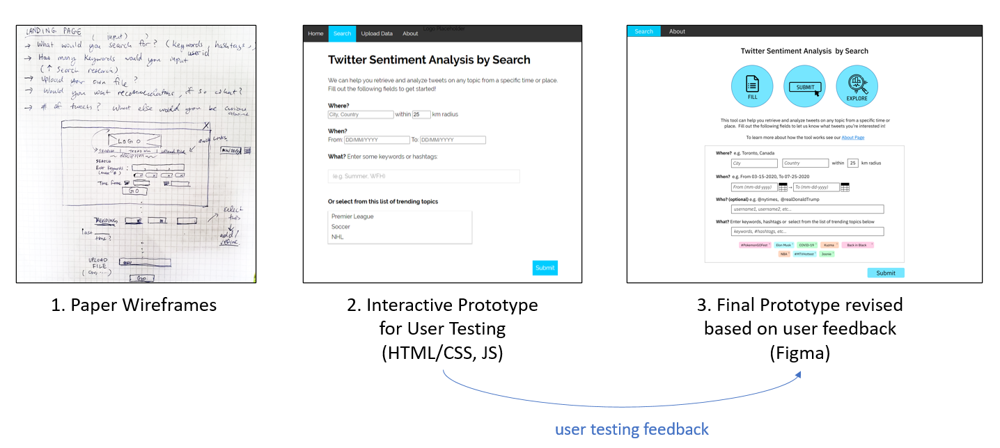
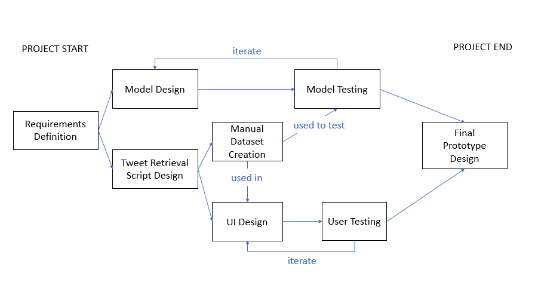
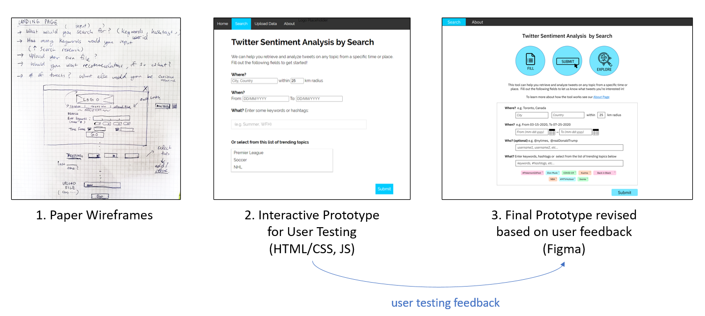

Home > Design Projects >
Methods Used:
Wireframes
Data Visualization
Remote User Testing
Scenario-based Design Walkthrough
Structured Interviews
SUS Assessment
Tools Used:
HTML, CSS, JavaScript (D3)
Python
Figma
Screenshare (Facebook Messenger)
The UI design was created in three stages starting with paper wireframes, followed by an interactive prototype used for testing and a final Figma prototype to communicate the recommendations from user testing. The prototypes were populated with a dataset created by the team manually containing 300 tweets related to COVID-19 and online classes. This was a topic of interest selected by the group, as the school term had gone remote.

Develop the Frontend UI and link it to the real backend
Perform more user testing and SUS assessment with updated prototype
Incorporate more informative filters and data visualizations (e.g. show the distribution over time or by location)
Click to see a full project summary
Project Overview
Dates: May - August 2020
Description: The goal of this project was to design a working sentiment analysis tool to be used by regular Twitter users, researchers and businesses that can analyze the sentiment of tweets related to a topic of interest and present the analysis results in an insightful manner to the user.
Team Members: 3 Systems Design Engineering Masters of Engineering students of which 2 were specializing in AI/ML
My Contributions: As the human factors specialist, I mainly contributed to the requirements research and UI prototype design and testing. I also assisted with the tweet retrieval design and creation of manually labelled dataset containing tweets related to COVID-19 and online classes.
Major Outcomes: The final model classified tweet sentiment with an accuracy over 80%
The UI prototype received an A- SUS score and A+ on the learning sub-scale
Description: The goal of this project was to design a working sentiment analysis tool to be used by regular Twitter users, researchers and businesses that can analyze the sentiment of tweets related to a topic of interest and present the analysis results in an insightful manner to the user.
Team Members: 3 Systems Design Engineering Masters of Engineering students of which 2 were specializing in AI/ML
My Contributions: As the human factors specialist, I mainly contributed to the requirements research and UI prototype design and testing. I also assisted with the tweet retrieval design and creation of manually labelled dataset containing tweets related to COVID-19 and online classes.
Major Outcomes:
Methods Used:
Tools Used:
Iterative Design Process
UI Design Progression
Two main screens needed to be designed: 1) the Search Screen that captures the user's topic of interest and 2) the Results Screen which displays the analysis results and sample tweets. Later, a third screen (About Screen) was added based on feedback from users to better explain sentiment analysis and how the tool works.The UI design was created in three stages starting with paper wireframes, followed by an interactive prototype used for testing and a final Figma prototype to communicate the recommendations from user testing. The prototypes were populated with a dataset created by the team manually containing 300 tweets related to COVID-19 and online classes. This was a topic of interest selected by the group, as the school term had gone remote.

Final Prototype
Future Steps
Click to see a full project summary